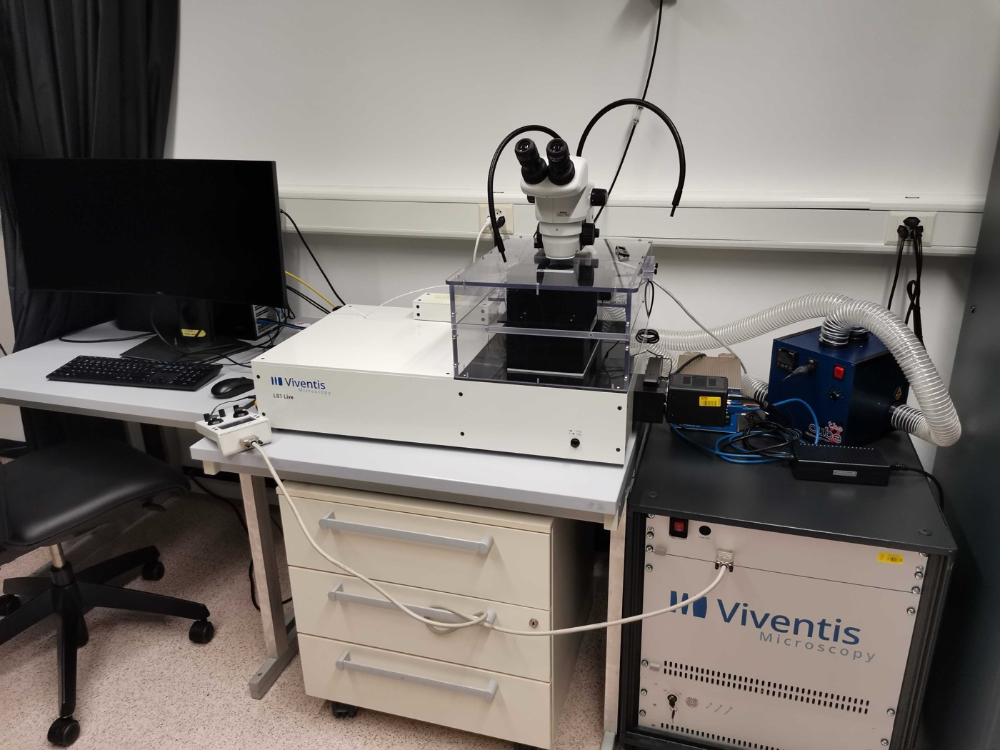

Keeping the tail in frame: LiLiTTool, a tracking software for smart light-sheet microscopy
LiLiTTool following the tail tip of a zebrafish embryo: the red dots are the grid of points tracked by CoTracker3, the red box is the region of interest that the stage follows. Credit: Clément Helsens, EPFL.
Over a 30-hour time-lapse, the tip of a zebrafish embryo's tail travels more than twice the width of the microscope's field of view. Keeping it in frame means moving the stage to follow it, and until recently that failed often enough to cost the Timing, Oscillations, Patterns Lab at EPFL more than a third of its long-term acquisitions. LiLiTTool, an open-source tool developed in the lab, is built to stop that happening.
The lab led by Andrew Oates studies the zebrafish segmentation clock, the oscillator that sets the rhythm at which the embryo lays down the segments of its future spine. Reading that rhythm means watching the same tissue continuously for more than a day. The previous setup coupled the stage to an intensity-based centre-of-mass estimate, which proved brittle: a transient bright artefact could pull the estimate off target, tissue reshaping shifted the signal distribution, and the whole approach depended on having a suitable fluorescent reporter in the first place. "People were having trouble tracking the tail tip properly, so I said let's write a proper tracking tool to do it", says first author Clément Helsens, a former CERN particle physicist who describes his role in the lab as "a facilitator".
Rather than tracking an intensity signal, LiLiTTool tracks textures. The user draws a box around the feature they care about; the software scatters a regular grid of points inside it and hands them to CoTracker3, a transformer network trained to follow arbitrary points through a video. No specific structure has to be segmented first: any textured pixels will do. Because CoTracker3 follows all the points jointly rather than one by one, it can hold on to points that are briefly hidden. Their collective displacement is fitted to a transformation that moves the region of interest, and the stage follows; the Z axis is handled separately by a classical centre-of-mass registration. An optional object detector trained on the tail tip can be fused with the tracker to correct accumulated drift. With that combination, the team held the tail tip in frame for 30 hours, even through heat-shock-induced contractions, when only imaging dim autofluorescence signal, or when a second embryo wandered into the field of view. The tracking approach also shows promise beyond zebrafish: working offline on already-acquired 2D movies, the team also followed tardigrade heads through strong non-rigid deformation, C. elegans spindle poles through the fast trajectories of cell division, and individual cells from the Cell Tracking Challenge, none of it requiring organism-specific retraining.
Microscope acquisition PCs are often old machines with undersized GPUs, so inference can be streamed to a GPU server over the network. In practice, three microscopes, two in the lab and one in EPFL's fish facility, all point at the same node. At 4x downsampling, processing a time point takes about 0.6s, which fits comfortably inside the five-minute acquisition interval.

LiLiTTool was built around the Viventis LS1 Live light-sheet microscope and lives inside that microscope's own software as a script plugin. A user double-clicks a desktop shortcut, points the tool at the acquisition folder, draws a box, saves it and starts tracking. No coding required. Optimising for one well-characterised system has a payoff: "If you have an LS1, installing it from scratch takes about half an hour, and it works out of the box", Helsens says. He is now adapting it to other instruments, which is harder than it sounds. All the tool needs as input are images written per position and a trigger announcing that a position has been acquired, but every new microscope has its quirks: for example one widely used commercial microscope control software will not let the stage move once an acquisition has started, which complicates closed loop control. The alternative now in development bypasses the vendor software and drives the hardware through pymmcore, a Python interface to the open-source microscope control software Micro-Manager.
More smart microscopy projects are under way. In one, the microscope scans a well plate, a model sorts the cells into singlets and doublets, and the software works out the route through the fewest positions that satisfies the user's criteria: a given number of cells, a set proportion of doublets, a minimum spacing between them. All of these projects begin the same way. "I'm basically listening to the people in the lab, to everybody who needs some help with computation", Helsens says. Putting someone with a technical background within earshot of the daily challenges of wet-lab biologists turns out to be a fairly reliable way of developing tools that address a real need.